Live Panel Timer
Live-Timer im Panel
Running project, activity, and elapsed time in the Plasma panel. No extra windows.
Laufendes Projekt, laufende Tätigkeit und verstrichene Zeit direkt im Plasma-Panel. Keine zusätzlichen Fenster.
Favorites & Recents
Favoriten & Zuletzt genutzt
Pin project/activity pairs. Switch tasks with one click and a confirmation dialog.
Projekt-/Tätigkeitspaare anheften. Aufgaben mit einem Klick und Bestätigungsdialog wechseln.
Statistics
Statistik
Hourly bar charts, project gantt, activity donut charts. Today and week at a glance.
Stundenbalken, Projekt-Gantt und Tätigkeits-Donut-Diagramme. Heute und Woche auf einen Blick.
Day Sparkline
Tages-Sparkline
Work-hours bar with sun/moon arcs, overtime segments, and hour ticks in the header.
Arbeitszeitleiste mit Sonnen-/Mondbogen, Überstundenabschnitten und Stundenmarken im Kopfbereich.
Tags & Billable
Tags & Abrechenbar
Tag entries and mark billable. Kimai auto-resolves billable from activity/project/customer.
Einträge taggen und als abrechenbar markieren. Kimai leitet „abrechenbar“ automatisch aus Tätigkeit, Projekt und Kunde ab.
KWallet Secrets
KWallet-Secrets
API tokens stored in KWallet. Multiple profiles per service, shared across instances.
API-Tokens liegen in KWallet. Mehrere Profile pro Dienst, über Instanzen hinweg geteilt.
Edit Running & Stopped
Laufende & gestoppte bearbeiten
Edit start time, project, activity. Split, delete, or edit stopped recents from the overflow menu.
Startzeit, Projekt und Tätigkeit ändern. Gestoppte Einträge über das Überlaufmenü teilen, löschen oder bearbeiten.
Idle Auto-Stop
Automatisch stoppen bei Inaktivität
Stop tracking after idle time. X11 and Wayland with automatic detection.
Zeiterfassung nach Inaktivität stoppen. X11 und Wayland mit automatischer Erkennung.
12 Languages
12 Sprachen
EN, DE, FR, ES, IT, NL, PT (BR), PL, UK, RU, JA, ZH (CN).
EN, DE, FR, ES, IT, NL, PT (BR), PL, UK, RU, JA, ZH (CN).
Android & Plasma Mobile
Android & Plasma Mobile
A Kirigami app with the same backends: timer, favorites, recents, manual entries, statistics and settings. As APK for Android and as AppImage or Flatpak for the desktop, with every release.
Eine Kirigami-App mit denselben Backends: Timer, Favoriten, Zuletzt genutzt, manuelle Einträge, Statistik und Einstellungen. Als APK für Android und als AppImage oder Flatpak für den Desktop, bei jedem Release.
Film Day View
Drehtag-Ansicht
Shooting-day entry for Kimai: begin, end, break, catering, day type, shooting day, extra pay and note. It needs the Drehzettel plugin, which keeps the extras on the server; without it the view stays hidden.
Drehtag-Erfassung für Kimai: Beginn, Ende, Pause, Catering, Tagestyp, Drehtag, Zusatzgage und Anmerkung. Sie braucht das Drehzettel-Plugin, das die Extras auf dem Server speichert; ohne das Plugin bleibt die Ansicht ausgeblendet.
Trips
Fahrten
With the Anfahrten plugin: log a trip, link it to a time entry, and accept or dismiss trips detected from Dawarich. Statistics show the km of the week and month.
Mit dem Anfahrten-Plugin: Fahrten erfassen, mit einem Zeiteintrag verknüpfen und aus Dawarich erkannte Fahrten übernehmen oder verwerfen. Die Statistik zeigt die km der Woche und des Monats.
Tracking without leaving the panel
Zeiterfassung, ohne das Panel zu verlassen
The panel chip shows the running project, activity and elapsed time. Click it to open the popup, on the desktop the widget is the popup. A click on the panel never starts or stops anything by accident.
Der Panel-Chip zeigt laufendes Projekt, Tätigkeit und verstrichene Zeit. Ein Klick öffnet das Popup, auf dem Desktop ist das Widget selbst das Popup. Ein Klick auf das Panel startet oder stoppt nie aus Versehen etwas.
- Start, stop and switch from the popup or the desktop widget
- Click a Recent or a favorite while tracking to confirm the switch; the same activity is not stopped
- Edit the running entry: start time, project, activity, tags and billable
- Pinned favorites and Recents use customer colors
- Starten, stoppen und wechseln im Popup oder im Desktop-Widget
- Klick auf einen Recent-Eintrag oder Favoriten während der Erfassung fragt nach dem Wechsel; dieselbe Tätigkeit wird nicht gestoppt
- Den laufenden Eintrag bearbeiten: Startzeit, Projekt, Tätigkeit, Tags und Abrechenbar
- Angeheftete Favoriten und Recents nutzen Kundenfarben
Your day as one bar
Dein Tag als ein Balken
A zoomed bar in the popup header shows your work hours: tracked time in green, overtime segments, hour ticks and sun and moon arcs for your location. Above it, today and the week are compared with your work contract.
Ein gezoomter Balken im Popup-Kopf zeigt deine Arbeitszeit: erfasste Zeit in Grün, Überstunden-Abschnitte, Stundenmarken und Sonnen- und Mondbögen für deinen Standort. Darüber werden Heute und die Woche mit deinem Arbeitsvertrag verglichen.
- Arcs for sun, moon and work can be switched on or off in Display
- The location search waits briefly after typing instead of querying on every keystroke
- Bögen für Sonne, Mond und Arbeit lassen sich unter Anzeige ein- und ausschalten
- Die Ortssuche wartet nach dem Tippen kurz, statt bei jedem Tastendruck abzufragen
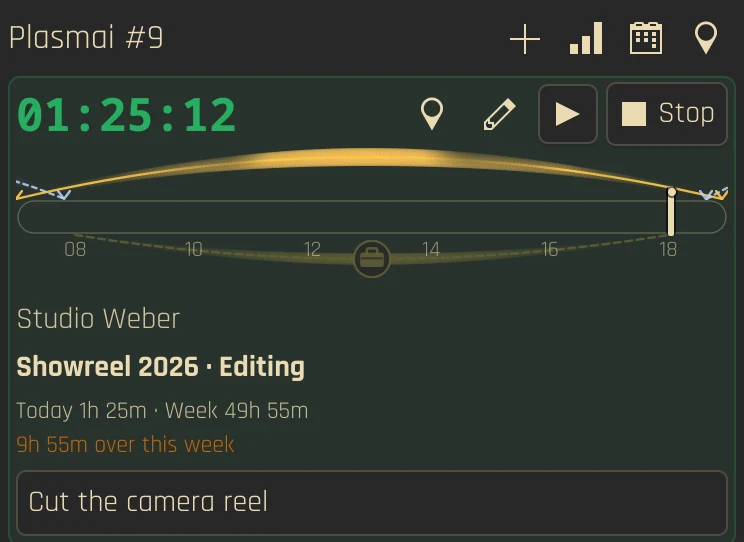
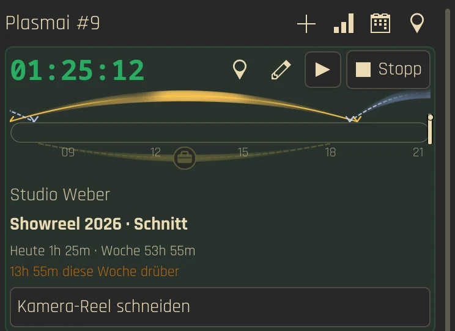
Manual entries, done properly
Manuelle Einträge, sauber gemacht
The plus button opens a form for entries you forgot to track. Searchable pickers find projects and activities, and you can create a new customer, project or activity right from the picker.
Der Plus-Knopf öffnet ein Formular für vergessene Einträge. Durchsuchbare Auswahllisten finden Projekte und Tätigkeiten, und einen neuen Kunden, ein neues Projekt oder eine neue Tätigkeit legst du direkt aus der Auswahl an.
- Begin, end and duration with date and time pickers
- Description, tags and billable; Kimai resolves billable automatically from activity, project and customer
- Edit, delete or split stopped Recents from the overflow menu
- Beginn, Ende und Dauer mit Datums- und Zeitauswahl
- Beschreibung, Tags und Abrechenbar; Kimai leitet Abrechenbar automatisch aus Tätigkeit, Projekt und Kunde ab
- Gestoppte Recents bearbeiten, löschen oder teilen über das Überlaufmenü
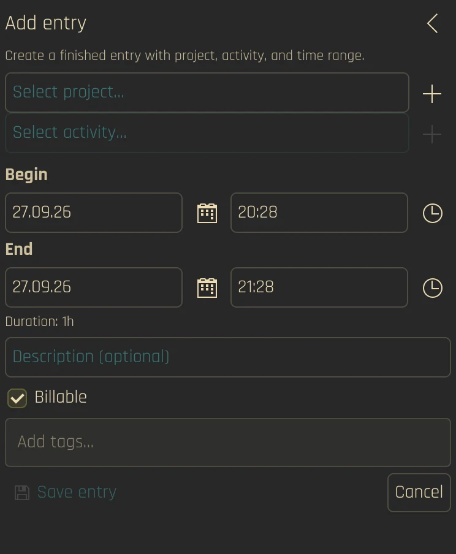
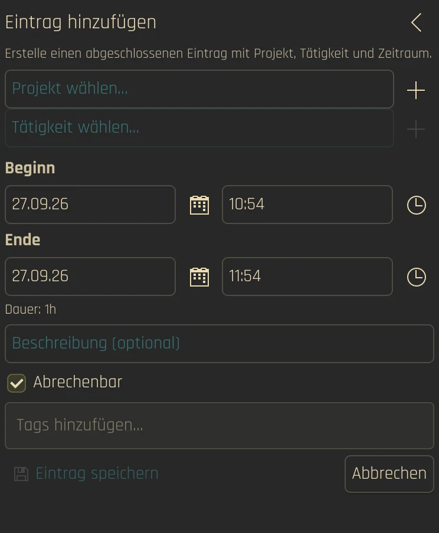
Charts for today and the week
Diagramme für Heute und die Woche
The chart icon switches to a statistics view. Filter by All, Billable or Not billable and page through days and weeks.
Das Diagramm-Symbol wechselt in eine Statistikansicht. Filtere nach Alle, Abrechenbar oder Nicht abrechenbar und blättere durch Tage und Wochen.
- Time by hour for the selected day
- Projects by day as stacked bars
- Projects by hour as a Gantt-style chart
- Activity distribution for today and this week as donuts
- Zeit nach Stunde für den gewählten Tag
- Projekte nach Tag als gestapelte Balken
- Projekte nach Stunde als Gantt-Diagramm
- Tätigkeitsverteilung für Heute und diese Woche als Donuts
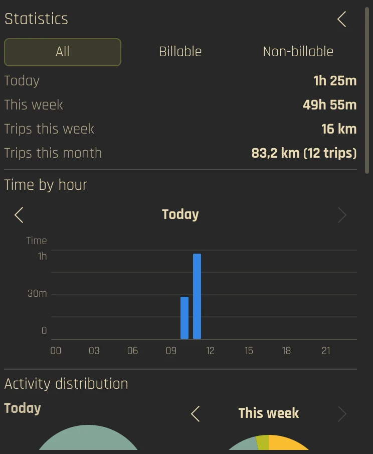
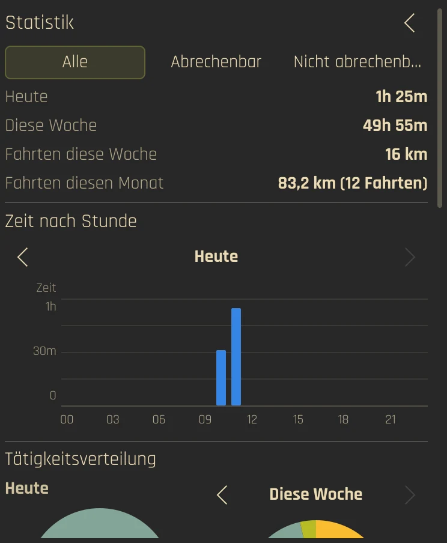
Idle, reminders and notifications
Inaktivität, Erinnerungen und Benachrichtigungen
- Idle dialog when you were away: keep the time, discard the idle time, or discard it and continue
- Idle detection uses the session IdleHint and ScreenSaver on Wayland and
xprintidleon X11; optional auto-stop - Forgot to start? An opt-in reminder, once per day during work hours
- Tracking in progress: one notification when you open the widget while a timer is running
- Overlap check: asks before saving a running-entry start that falls inside the previous timesheet and shows that entry’s end time (on by default)
- Inaktivitäts-Dialog nach deiner Abwesenheit: Zeit behalten, Leerlaufzeit verwerfen oder verwerfen und weitermachen
- Inaktivitätserkennung nutzt unter Wayland den IdleHint der Sitzung und ScreenSaver, unter X11
xprintidle; optionaler Auto-Stopp - Start vergessen? Eine optionale Erinnerung, einmal pro Tag während der Arbeitszeit
- Erfassung läuft: eine Benachrichtigung, wenn du das Widget bei laufendem Timer öffnest
- Überlappungsprüfung: fragt nach, bevor ein Start des laufenden Eintrags gespeichert wird, der in den vorigen Eintrag fällt, und zeigt dessen Endzeit (standardmäßig an)
Work contract and holidays
Arbeitsvertrag und Feiertage
Today and week totals come from your Kimai work contract. The remaining hours of the week skip vacation and public holidays when the Working Hours & Holidays plugin or the official WorkContractBundle is installed.
Summen für Heute und Woche stammen aus deinem Kimai-Arbeitsvertrag. Die Restzeit der Woche überspringt Urlaub und Feiertage, wenn das Plugin Working Hours & Holidays oder das offizielle WorkContractBundle installiert ist.
- Plasmai detects which of the two plugins is present and re-checks every hour
- Approved absences and public holidays reduce the remaining time; automatic bookings from the WorkContract plugin are not counted twice
- Neither plugin is required; without them you still get today and week totals
- Plasmai erkennt, welches der beiden Plugins vorhanden ist, und prüft stündlich neu
- Genehmigte Abwesenheiten und Feiertage verringern die Restzeit; automatische Buchungen des WorkContract-Plugins werden nicht doppelt gezählt
- Keines der Plugins ist Pflicht; ohne sie bekommst du weiter die Summen für Heute und Woche
Film days and trips
Drehtage und Fahrten
Two more Kimai plugins plug into Plasmai. Both are detected per profile; without them nothing changes.
Zwei weitere Kimai-Plugins docken an Plasmai an. Beide werden pro Profil erkannt; ohne sie ändert sich nichts.
- Drehzettel: break, catering, day category and type, surcharge day, shooting day, extra pay and note are stored in the plugin; Plasmai keeps nothing on the device. Only changed fields are sent
- Without the plugin, without an engagement for that day or while the server cannot be reached, begin and end are saved only
- Anfahrten: log trips from the header, the running entry or a Recent entry's menu; detected trips show above Recent. The app has a Trips page with the month's logbook and Commute today
- The setting Trips hides all of it
- Drehzettel: Pause, Catering, Tageskategorie und -typ, Zuschlagstag, Drehtag, Zusatzgage und Anmerkung liegen im Plugin; Plasmai speichert nichts auf dem Gerät. Gesendet werden nur geänderte Felder
- Ohne Plugin, ohne Engagement an diesem Tag oder solange der Server nicht erreichbar ist, werden nur Beginn und Ende gespeichert
- Anfahrten: Fahrten aus dem Kopf, vom laufenden Eintrag oder aus dem Menü eines Zuletzt-Eintrags erfassen; erkannte Fahrten erscheinen über Zuletzt genutzt. Die App hat eine Seite Fahrten mit dem Fahrtenbuch des Monats und Arbeitsweg heute
- Die Einstellung Fahrten blendet alles aus
How it works
So funktioniert es
Plasmai is a pure QML applet, so the KDE Store package contains no binaries. Every provider is translated into one Kimai-shaped model, so the interface is the same for all services. What a service cannot do is switched off by a capability flag instead of a different UI.
Plasmai ist ein reines QML-Applet, das Paket im KDE Store enthält also keine Binärdateien. Jeder Anbieter wird in ein Kimai-förmiges Modell übersetzt, sodass die Oberfläche für alle Dienste gleich ist. Was ein Dienst nicht kann, wird per Capability-Flag abgeschaltet statt durch eine andere Oberfläche.
- API tokens are stored in KWallet
- Profiles, favorites, display and behavior settings are shared by all instances in
~/.config/com.github.shrippen.plasmai/shared.json - You can keep several profiles per service
- API-Tokens liegen in KWallet
- Profile, Favoriten sowie Anzeige- und Verhaltenseinstellungen teilen sich alle Instanzen in
~/.config/com.github.shrippen.plasmai/shared.json - Pro Dienst kannst du mehrere Profile anlegen
Supported backends
Unterstützte Backends
| BackendBackend | AuthenticationAuthentifizierung | StatusStatus |
|---|---|---|
| Kimai | Bearer token + server URLBearer-Token + Server-URL | Tested, the reference backendGetestet, das Referenz-Backend |
| Clockify | API key; optional regional URLAPI-Key; optionale regionale URL | Experimental, not verified with a live accountExperimentell, nicht mit einem echten Konto geprüft |
| Toggl Track | API token (Basic auth)API-Token (Basic Auth) | Experimental, not verified with a live accountExperimentell, nicht mit einem echten Konto geprüft |
| SolidTime | Bearer JWT + instance URLBearer-JWT + Instanz-URL | Experimental, not verified with a live accountExperimentell, nicht mit einem echten Konto geprüft |
Tags work with Kimai and, where the API takes names, Toggl; Clockify and SolidTime hide the field. Billable works with all four.
Tags funktionieren mit Kimai und, wo die API Namen annimmt, mit Toggl; Clockify und SolidTime blenden das Feld aus. Abrechenbar funktioniert mit allen vier.
Setup
Einrichtung
- Install the widget with the command above, or add it from the KDE Store, then right-click the panel → Add Widgets → search for Plasmai
- Right-click the widget → Configure Plasmai
- Connection: choose the service, set the URL if needed, save the API token and test the connection
- Favorites: pin frequently used project and activity pairs
- Display and Behavior: number of Recents, panel labels, sparkline arcs, idle stop, notifications
- Installiere das Widget mit dem Befehl oben oder aus dem KDE Store, dann Rechtsklick auf das Panel → Widgets hinzufügen → nach Plasmai suchen
- Rechtsklick auf das Widget → Plasmai einrichten
- Verbindung: Dienst wählen, falls nötig die URL setzen, API-Token speichern und die Verbindung testen
- Favoriten: häufig genutzte Projekt-/Tätigkeitspaare anheften
- Anzeige und Verhalten: Anzahl der Recents, Panel-Beschriftung, Sparkline-Bögen, Inaktivitäts-Stopp, Benachrichtigungen
Update with kpackagetool6 -u . -t Plasma/Applet from a checkout, install or update a release with the command in the box at the top and remove it with kpackagetool6 -r com.github.shrippen.plasmai -t Plasma/Applet.
Aktualisieren mit kpackagetool6 -u . -t Plasma/Applet aus einem Checkout, ein Release installieren oder aktualisieren mit dem Befehl in der Box oben und entfernen mit kpackagetool6 -r com.github.shrippen.plasmai -t Plasma/Applet.
Requirements
Voraussetzungen
- KDE Plasma 6
secret-tool(libsecret) for KWallet token storagenotify-send(libnotify) for desktop notificationsxprintidle(X11) orloginctl(Wayland) for idle detection, optional- A supported time tracker with API access
- KDE Plasma 6
secret-tool(libsecret) zum Speichern der Tokens in KWalletnotify-send(libnotify) für Desktop-Benachrichtigungenxprintidle(X11) oderloginctl(Wayland) für die Inaktivitätserkennung, optional- Ein unterstützter Zeiterfassungsdienst mit API-Zugang
Languages
Sprachen
The interface and the KDE Store description are translated into 12 languages: English, German, French, Spanish, Italian, Dutch, Portuguese (Brazil), Polish, Ukrainian, Russian, Japanese and Simplified Chinese.
Die Oberfläche und die KDE-Store-Beschreibung sind in 12 Sprachen übersetzt: Englisch, Deutsch, Französisch, Spanisch, Italienisch, Niederländisch, Portugiesisch (Brasilien), Polnisch, Ukrainisch, Russisch, Japanisch und vereinfachtes Chinesisch.
Questions
Fragen
Can I start or stop by clicking the panel icon?Kann ich per Klick auf das Panel-Symbol starten oder stoppen?
No. A click on the panel chip only opens the popup, so nothing starts or stops by accident. Starting and stopping happen inside the popup or the desktop widget.
Nein. Ein Klick auf den Panel-Chip öffnet nur das Popup, damit nichts versehentlich startet oder stoppt. Starten und Stoppen passieren im Popup oder im Desktop-Widget.
Which backends are production-tested?Welche Backends sind produktiv getestet?
Only Kimai. Clockify, Toggl Track and SolidTime are implemented against their public APIs, but stay experimental until they are verified with live accounts.
Nur Kimai. Clockify, Toggl Track und SolidTime sind gegen ihre öffentlichen APIs umgesetzt, bleiben aber experimentell, bis sie mit echten Konten geprüft sind.
Does it track apps or windows automatically?Erfasst es Apps oder Fenster automatisch?
No. Automatic app tracking, screenshots, invoicing, expenses and team dashboards are on the “won’t do” list. Plasmai stays a small API client in the panel.
Nein. Automatische App-Erfassung, Screenshots, Rechnungen, Spesen und Team-Dashboards stehen auf der „Wird nicht gemacht“-Liste. Plasmai bleibt ein kleiner API-Client im Panel.
Where are my tokens stored?Wo liegen meine Tokens?
In KWallet, via secret-tool. The shared settings file holds your profiles, favorites and options.
In KWallet, über secret-tool. Die geteilte Einstellungsdatei enthält deine Profile, Favoriten und Optionen.
Do I need the holiday plugin for Kimai?Brauche ich das Feiertags-Plugin für Kimai?
No. It only improves the remaining hours of the week. Plasmai works without it and detects it automatically when it is there.
Nein. Es verbessert nur die Restzeit der Woche. Plasmai funktioniert auch ohne und erkennt es automatisch, wenn es vorhanden ist.
Changes
Änderungen
What each release brought, newest first. Every release adds an entry here and the same notes on the release page.
Was jede Version gebracht hat, die neueste zuerst. Jede Version bekommt hier einen Eintrag und dieselben Notizen auf der Release-Seite.
-
2.6.2
The Plasma widget no longer fills the memory of the desktop shell.Das Plasma-Widget füllt nicht mehr den Speicher der Desktop-Shell.
All changes since 2.6.1 →Alle Änderungen seit 2.6.1 →FixedBehoben
- Widget: plasmashell grew by gigabytes a day (14 GB after two days). Every save of the offline data stayed in memory; now nothing is kept. The offline data is also written less often (if nothing changed, once an hour instead of every five minutes; a running timer alone is no change) and no longer grows by a few entries every day.Widget: plasmashell wuchs um Gigabytes am Tag (14 GB nach zwei Tagen). Jedes Speichern der Offline-Daten blieb im Arbeitsspeicher liegen; jetzt bleibt nichts zurück. Die Offline-Daten werden außerdem seltener geschrieben (ohne Änderung nur noch einmal pro Stunde statt alle fünf Minuten; ein laufender Timer allein zählt nicht als Änderung) und wachsen nicht mehr jeden Tag um ein paar Einträge.
-
2.6.1
The Plasma widget for 2.6.0: its package was missing from the 2.6.0 release.Das Plasma-Widget zu 2.6.0: Sein Paket fehlte im Release 2.6.0.
FixedBehoben
- 2.6.0 came without the widget package (
.plasmoid) and the install script, so the one-line install command failed with "not found" while 2.6.0 was the latest release. The package build stopped at a comment that named the internal screenshot code it removes. The checks now build the widget package on every pull request, so this shows before a release.2.6.0 kam ohne das Widget-Paket (.plasmoid) und das Installationsskript, deshalb schlug der Einzeiler zur Installation mit „nicht gefunden“ fehl, solange 2.6.0 das neueste Release war. Der Paketbau brach an einem Kommentar ab, der den internen Screenshot-Code nannte, den er entfernt. Die Prüfungen bauen das Widget-Paket jetzt bei jedem Pull Request, so fällt das vor einem Release auf.
NoteHinweis
- No changes in the app or the widget beyond 2.6.0: everything new in 2.6.0 below applies.App und Widget sind gegenüber 2.6.0 unverändert: Alles Neue aus 2.6.0 unten gilt.
All changes since 2.6.0 →Alle Änderungen seit 2.6.0 →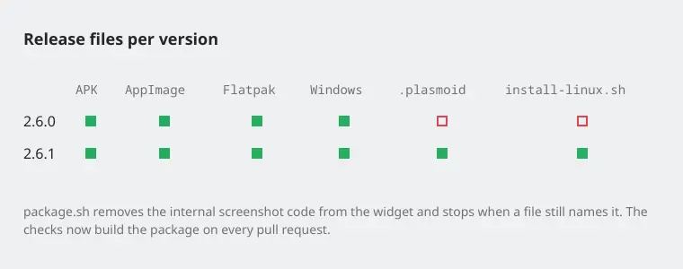
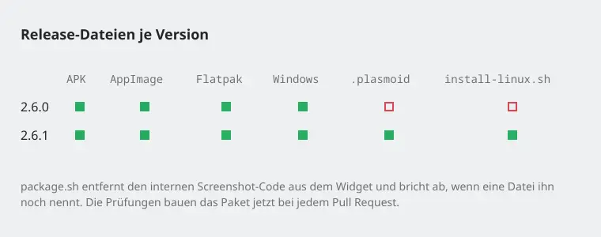
Release files per versionRelease-Dateien je Version - 2.6.0 came without the widget package (
-
2.6.0
A terminal client for the desktop app, a day of its own for the activity chart, and editing that keeps the dates and times you enter.Ein Terminal-Client für die Desktop-App, ein eigener Tag für das Tätigkeitsdiagramm und Bearbeiten, das Datum und Uhrzeit so behält, wie du sie eingibst.
NewNeu
- Terminal client in the desktop app (Linux, macOS):
plasmai-app --tuishows the timer, recents, today as hour rows with gaps and the week as a table. 1–9 start or switch,sstops. For tracking from a terminal or over SSH; it uses the app's profile and keeps its own offline outbox. The widget has none.Terminal-Client in der Desktop-App (Linux, macOS):plasmai-app --tuizeigt Timer, Zuletzt, Heute als Stundenzeilen mit Lücken und die Woche als Tabelle. 1–9 startet oder wechselt,sstoppt. Zum Erfassen aus dem Terminal oder per SSH; er nutzt das Profil der App und hat einen eigenen Offline-Ausgang. Das Widget hat keinen.
ImprovedVerbessert
- Statistics: the activity distribution has its own day switcher, so you can look at another day without moving the other charts. Day and week take half the width each; an empty day keeps the chart's height.Statistik: Die Tätigkeitsverteilung hat einen eigenen Tagesumschalter, so siehst du einen anderen Tag, ohne die übrigen Diagramme zu verschieben. Tag und Woche teilen sich die Breite; ein leerer Tag behält die Höhe des Diagramms.
- Statistics (Kante styles): hovering a block in "Projects by hour" shows its project, time span and duration; on touch a tap does.Statistik (Kante-Stile): Fährst du über einen Block in „Projekte nach Stunde“, zeigt er Projekt, Zeitraum und Dauer; auf Touch reicht ein Tippen.
FixedBehoben
- Editing an entry could move its start 100 years back. In a short date format with a two-digit year ("13.10.26", "10/13/26") the date field read its own text as 1926. A running entry then started in 1926, and Kimai refused a stopped one as too long. Two-digit years now mean this century.Beim Bearbeiten konnte der Start eines Eintrags 100 Jahre zurückspringen. In einem kurzen Datumsformat mit zweistelliger Jahreszahl („13.10.26“, „10/13/26“) las das Datumsfeld seinen eigenen Text als 1926. Ein laufender Eintrag begann dann 1926, einen beendeten lehnte Kimai als zu lang ab. Zweistellige Jahre bedeuten jetzt dieses Jahrhundert.
- App time picker in 12-hour languages (US English and others): it showed a 24-hour dial without AM/PM and put 12:xx in the morning. It now shows 1–12 with AM/PM. In every language, Select without turning a dial gave the current time instead of the time it opened with.Zeitwähler der App in 12-Stunden-Sprachen (US-Englisch und andere): Er zeigte ein 24-Stunden-Rad ohne AM/PM und legte 12:xx auf den Vormittag. Jetzt zeigt er 1–12 mit AM/PM. In jeder Sprache gab „Auswählen“ ohne Drehen die aktuelle Uhrzeit zurück statt der, mit der er geöffnet wurde.
- 12-hour time fields: typing an hour no longer moves a PM time to the morning (3 on 2:30 PM stays 3:30 PM).12-Stunden-Zeitfelder: Eine getippte Stunde verschiebt eine PM-Zeit nicht mehr auf den Vormittag (3 auf 2:30 PM bleibt 3:30 PM).
- Statistics (Kante styles): the chart read-outs wrote project names in the project colour, which some colours made unreadable. They now use the text colour with a coloured square in front.Statistik (Kante-Stile): Die Read-outs der Diagramme schrieben Projektnamen in der Projektfarbe, die manche Farben unlesbar machten. Jetzt stehen sie in der Textfarbe mit einem farbigen Quadrat davor.
All changes since 2.5.3 →Alle Änderungen seit 2.5.3 →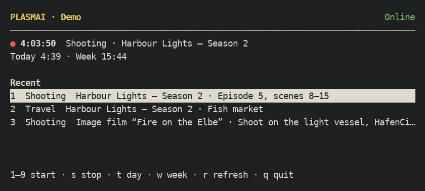
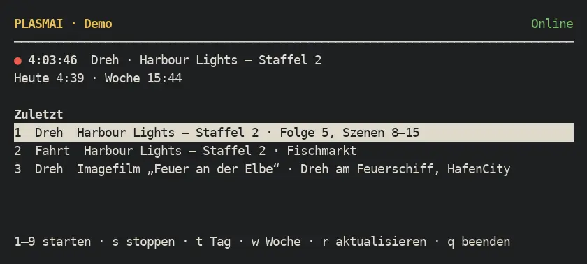
Terminal client, plasmai-app --tui (demo data)Terminal-Client, plasmai-app --tui (Demodaten) 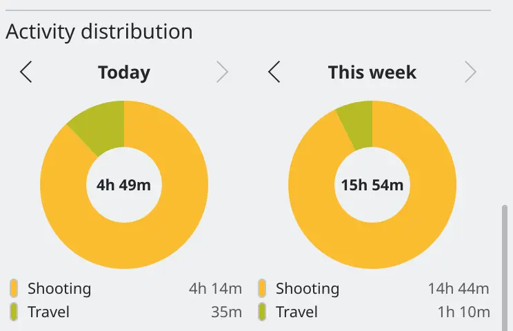
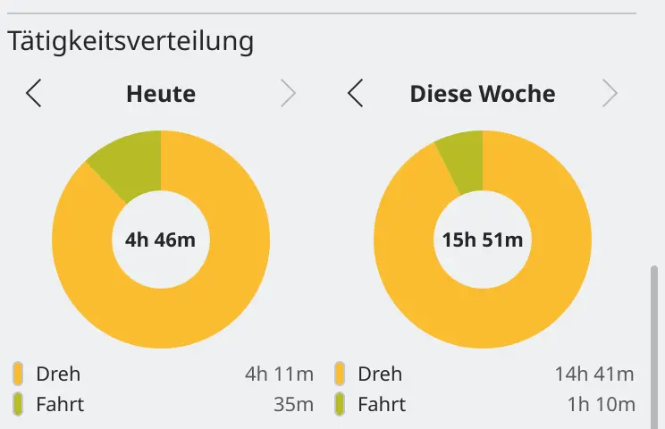
Activity distribution with its own day (demo data)Tätigkeitsverteilung mit eigenem Tag (Demodaten) 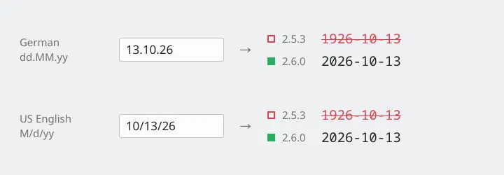
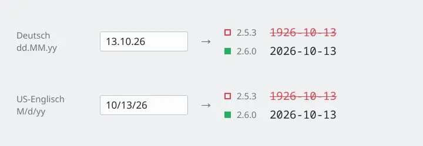
What the date field reads back from its own textWas das Datumsfeld aus seinem eigenen Text zurückliest 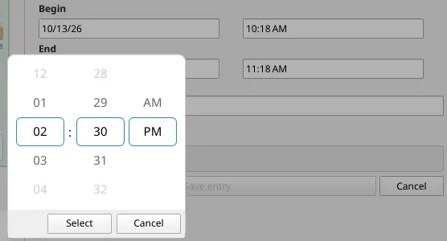
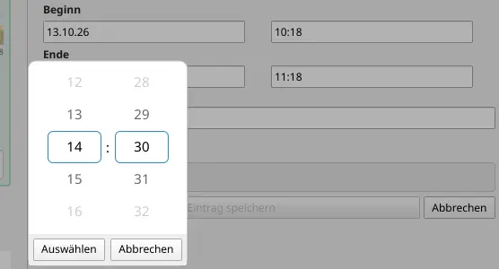
Time picker at 2:30 PM in US English (demo data)Zeitwähler um 14:30 auf Deutsch (Demodaten) - Terminal client in the desktop app (Linux, macOS):
Older releasesÄltere Versionen
-
2.5.3
A smoother tray popup on Windows.Ein weicheres Tray-Fenster unter Windows.
All changes since 2.5.2 →Alle Änderungen seit 2.5.2 →ImprovedVerbessert
- Windows: the tray popup fades in while sliding out of the taskbar, and back out as it closes. It follows the Windows setting for animation effects.Windows: Das Tray-Fenster blendet sich ein, während es aus der Taskleiste gleitet, und beim Schließen wieder aus. Es folgt der Windows-Einstellung für Animationseffekte.
-
2.5.2
The Windows app keeps its settings again.Die Windows-App behält ihre Einstellungen wieder.
All changes since 2.5.1 →Alle Änderungen seit 2.5.1 →FixedBehoben
- Windows: the app did not save its settings. Windows refused to replace the settings file, so the setup wizard stored the token but not the server address, and the app showed a connection problem. Settings are now written directly when the file cannot be replaced.Windows: Die App speicherte ihre Einstellungen nicht. Windows verweigerte das Ersetzen der Einstellungsdatei, deshalb speicherte der Einrichtungsassistent das Token, aber nicht die Serveradresse, und die App meldete ein Verbindungsproblem. Lässt sich die Datei nicht ersetzen, werden die Einstellungen jetzt direkt geschrieben.
-
2.5.1
The app starts again.Die App startet wieder.
All changes since 2.5.0 →Alle Änderungen seit 2.5.0 →FixedBehoben
- App (Android, Windows, Linux): 2.5.0 did not start; a file of the new Look step was missing from the app. The Plasma widget was not affected.App (Android, Windows, Linux): 2.5.0 startete nicht; eine Datei des neuen Schritts „Aussehen“ fehlte in der App. Das Plasma-Widget war nicht betroffen.
-
2.5.0
Choose the look of Plasmai while setting it up.Das Aussehen von Plasmai schon bei der Einrichtung wählen.
NewNeu
- Setup wizard: a new "Look" step after the system check lets you choose System, Kante or Kante Light. The wizard changes with your choice, with a preview and the colours of the look; the choice is saved and can be changed later in the settings.Einrichtungsassistent: Ein neuer Schritt „Aussehen“ nach der Systemprüfung lässt zwischen System, Kante und Kante Light wählen. Der Assistent wechselt mit der Wahl, mit Vorschau und den Farben des Aussehens; die Wahl wird gespeichert und lässt sich später in den Einstellungen ändern.
All changes since 2.4.0 →Alle Änderungen seit 2.4.0 →NoteHinweis
- Do not use: the app (Android, Windows, Linux) does not start in this version. Use 2.5.1. The Plasma widget works.Nicht verwenden: Die App (Android, Windows, Linux) startet in dieser Version nicht. Nimm 2.5.1. Das Plasma-Widget funktioniert.
-
2.4.0
A setup wizard for the first start, and a Windows popup that fits scaled screens. Updating resets the old configuration once.Ein Einrichtungsassistent für den ersten Start und ein Windows-Fenster, das auf skalierte Bildschirme passt. Das Update setzt die alte Konfiguration einmal zurück.
NewNeu
- First start: a setup wizard in the widget and the app instead of the "Configure" hint. It checks the system (widget: secret-tool and KWallet, with the install command for your distribution), lets you pick the service (Clockify, Toggl Track and SolidTime marked experimental), tests address and token before storing the token, and asks for work hours, the place for the sun arcs and the start reminder (all optional).Erster Start: ein Einrichtungsassistent in Widget und App statt des Hinweises „Einrichten“. Er prüft das System (Widget: secret-tool und KWallet, mit dem Installationsbefehl für deine Distribution), lässt den Dienst wählen (Clockify, Toggl Track und SolidTime als experimentell markiert), testet Adresse und Token, bevor er das Token speichert, und fragt Arbeitszeiten, den Ort für die Sonnenbögen und die Start-Erinnerung ab (alles optional).
- Windows: the popup can be resized by dragging its border; the size is kept for the next start.Windows: Das Fenster lässt sich am Rand größer und kleiner ziehen; die Größe bleibt für den nächsten Start.
ImprovedVerbessert
- Server addresses are cleaned when set up: https is added, a Kimai page or API address is cut back to the instance, plain http outside the machine is warned about; a pasted token loses blanks and "Bearer ".Serveradressen werden beim Einrichten bereinigt: https wird ergänzt, eine Kimai-Seiten- oder API-Adresse auf die Instanz gekürzt, vor unverschlüsseltem http außerhalb des Rechners wird gewarnt; ein eingefügtes Token verliert Leerzeichen und „Bearer “.
FixedBehoben
- Windows: with display scaling (e.g. 250 % on a full HD screen) the popup was taller than the screen and its lower part, with the buttons, was cut off. It now fits the screen.Windows: Mit Anzeigeskalierung (z. B. 250 % auf einem Full-HD-Bildschirm) war das Fenster höher als der Bildschirm und sein unterer Teil mit den Knöpfen abgeschnitten. Jetzt passt es auf den Bildschirm.
- App (Android, Windows, macOS): small text (hints, durations, secondary lines) was larger than the normal text; it is now smaller, as in the widget.App (Android, Windows, macOS): Kleine Schrift (Hinweise, Dauern, Nebenzeilen) war größer als die normale; jetzt ist sie kleiner, wie im Widget.
All changes since 2.3.1 →Alle Änderungen seit 2.3.1 →NoteHinweis
- The old configuration is deleted. On the first start after updating from 2.3.x or older, Plasmai (widget and app) resets every setting to its default and removes the stored API tokens of all profiles, then the setup wizard starts. Profiles, favourites, display and behaviour settings, work hours and place have to be set up again. Sync offline changes before updating: unsynced entries of an old profile are only sent again if the new profile has the same id.Die alte Konfiguration wird gelöscht. Beim ersten Start nach einem Update von 2.3.x oder älter setzt Plasmai (Widget und App) jede Einstellung auf ihren Standard zurück und entfernt die gespeicherten API-Tokens aller Profile, danach startet der Einrichtungsassistent. Profile, Favoriten, Anzeige- und Verhaltenseinstellungen, Arbeitszeiten und Ort müssen neu eingerichtet werden. Offline-Änderungen vor dem Update synchronisieren: Nicht gesendete Einträge eines alten Profils gehen nur dann erneut raus, wenn das neue Profil dieselbe ID hat.
-
2.3.1
The running time and its notification stay right after the app was away.Laufzeit und Benachrichtigung stimmen, sobald die App zurück ist.
All changes since 2.3.0 →Alle Änderungen seit 2.3.0 →FixedBehoben
- App: the running time is right as soon as the app is opened again, no longer stuck at the value from when it was closed until the server answers.App: Die Laufzeit stimmt, sobald die App wieder geöffnet wird, statt bis zur Antwort des Servers auf dem Wert vom Schließen stehen zu bleiben.
- App (Android, Plasma Mobile): the notification follows an edit of the running entry, e.g. an earlier start time.App (Android, Plasma Mobile): Die Benachrichtigung folgt einer Änderung am laufenden Eintrag, etwa einer früheren Startzeit.
-
2.3.0
Catering on a film day follows the engagement.Das Catering am Drehtag folgt dem Engagement.
ImprovedVerbessert
- Film day: a day without saved details starts with catering on when the engagement's catering default in the Drehzettel plugin says so.Drehtag: Ein Tag ohne gespeicherte Angaben beginnt mit Catering, wenn die Catering-Vorgabe des Engagements im Drehzettel-Plugin das sagt.
All changes since 2.2.0 →Alle Änderungen seit 2.2.0 →NoteHinweis
- Needs the updated Drehzettel plugin.Braucht das aktualisierte Drehzettel-Plugin.
-
2.2.0
A notification while the timer runs, the film day note on the Kimai entry, and the Kante styles built from Kante's own components.Eine Benachrichtigung, solange der Timer läuft, die Drehtag-Notiz am Kimai-Eintrag und Kante-Stile aus Kantes eigenen Bausteinen.
NewNeu
- App (Android, Plasma Mobile): a permanent notification while a timer runs, with the project, activity and start time (on Android with the running time). A tap opens the app.App (Android, Plasma Mobile): eine dauerhafte Benachrichtigung, solange ein Timer läuft, mit Projekt, Tätigkeit und Startzeit (unter Android mit der Laufzeit). Ein Tippen öffnet die App.
ImprovedVerbessert
- Film day: the note is the Kimai entry's description, no longer a second field in the Drehzettel plugin. Typed before the entry exists, it goes with Start or Save.Drehtag: Die Notiz ist die Beschreibung des Kimai-Eintrags, kein zweites Feld im Drehzettel-Plugin mehr. Vor dem Eintrag getippt, geht sie mit Start oder Speichern mit.
- Kante styles: charts, the day strip, time lines, pick lists, chips, colour swatches, date and time fields and the offline notice now come from Kante's own components, so widget and app look and behave alike.Kante-Stile: Diagramme, Tagesleiste, Zeitzeilen, Auswahllisten, Chips, Farbfelder, Datums- und Zeitfelder und der Offline-Hinweis kommen jetzt aus Kantes eigenen Bausteinen, so sehen Widget und App gleich aus und verhalten sich gleich.
All changes since 2.1.0 →Alle Änderungen seit 2.1.0 →FixedBehoben
- Widget: a right click on a Recent entry opened the widget's menu instead of the entry menu.Widget: Ein Rechtsklick auf einen Eintrag unter Zuletzt öffnete das Widget-Menü statt des Eintragsmenüs.
- Statistics (Kante styles): the chosen filter segment was beige text on yellow and hard to read; it is now marked by a yellow bar under the label.Statistik (Kante-Stile): Das gewählte Filtersegment war beiger Text auf Gelb und schwer lesbar; jetzt markiert es ein gelber Balken unter der Beschriftung.
- Styles System and Kante Light: text in the system accent colour (headings, the film day date, chips) is lightened until it reads, also with a dark Plasma accent.Stile System und Kante Light: Text in der Akzentfarbe des Systems (Überschriften, das Drehtag-Datum, Chips) wird aufgehellt, bis er lesbar ist, auch mit einem dunklen Plasma-Akzent.
- Film day: the note was lost when leaving the page (or closing the popup) right after typing, and on Android the last word held back by the keyboard's predictive text was not saved.Drehtag: Die Notiz ging verloren, wenn man die Seite direkt nach dem Tippen verließ (oder das Fenster schloss), und unter Android wurde das letzte Wort, das die Wortvorschläge der Tastatur zurückhielten, nicht gespeichert.
-
2.1.0
Plasmai keeps working without a connection, and comes to Windows as a tray app.Plasmai arbeitet ohne Verbindung weiter und kommt als Tray-App auf Windows.
NewNeu
- Offline mode (Kimai): with bad reception the widget and the app keep working from the last known state ("Offline · as of 12:04"). Starting and stopping the timer, adding, editing and deleting entries, film day details and trips are kept on the device and sent in order once the server answers again. A change the server does not accept, or an entry changed elsewhere meanwhile, waits in "Not synced" to retry, overwrite or discard; nothing is dropped silently. Creating customers, projects and activities, splitting and merging entries, discarding idle time and switching profiles need a connection.Offline-Modus (Kimai): Bei schlechtem Empfang arbeiten Widget und App mit dem letzten bekannten Stand weiter („Offline · Stand 12:04“). Timer starten und stoppen, Einträge anlegen, bearbeiten und löschen, Drehtag-Angaben und Fahrten bleiben auf dem Gerät und gehen der Reihe nach raus, sobald der Server wieder antwortet. Eine Änderung, die der Server ablehnt, oder ein inzwischen anderswo geänderter Eintrag wartet unter „Nicht synchronisiert“ auf Wiederholen, Überschreiben oder Verwerfen; nichts geht still verloren. Kunden, Projekte und Tätigkeiten anlegen, Einträge teilen und zusammenführen, Leerlauf verwerfen und Profile wechseln braucht eine Verbindung.
- Windows (preview): Plasmai as a tray icon whose popup is the app, like the widget in the Plasma panel. The icon shows a running timer with a red dot, its menu stops the running entry or starts the last used one, and it can start at login. Installer (per user, no administrator rights) and zip. It follows the system's light or dark setting.Windows (Vorschau): Plasmai als Tray-Symbol, dessen Fenster die App ist, wie das Widget im Plasma-Panel. Das Symbol zeigt einen laufenden Timer mit rotem Punkt, sein Menü stoppt den laufenden Eintrag oder startet den zuletzt genutzten, und es kann bei der Anmeldung starten. Installer (je Benutzer, ohne Administratorrechte) und Zip. Es folgt der hellen oder dunklen Einstellung des Systems.
ImprovedVerbessert
- Widget (Kante styles): a running timer no longer tints the whole panel entry in the accent colour. A small red indicator marks it instead; Display settings offer a red dot, a red bottom edge or a red side stripe, with a preview.Widget (Kante-Stile): Ein laufender Timer färbt nicht mehr den ganzen Panel-Eintrag in der Akzentfarbe. Eine kleine rote Markierung zeigt ihn stattdessen; die Anzeige-Einstellungen bieten einen roten Punkt, eine rote Unterkante oder einen roten Seitenstreifen, mit Vorschau.
- Film day: switching days is instant. The last month is loaded in the background; a day opens from it and is then checked against the server, so what is shown can still change a moment later.Drehtag: Der Tageswechsel geht sofort. Der letzte Monat lädt im Hintergrund; ein Tag öffnet daraus und wird dann mit dem Server abgeglichen, das Gezeigte kann sich also einen Moment später noch ändern.
- App: after a lost connection the app refreshes as soon as the network is back, instead of at the next poll.App: Nach einem Verbindungsabbruch lädt die App neu, sobald das Netz zurück ist, statt erst bei der nächsten Abfrage.
- App (desktop style): the statistics filter looks like the widget's (three segments side by side); in touch mode the segments get the larger touch height.App (Desktop-Stil): Der Statistikfilter sieht aus wie im Widget (drei Segmente nebeneinander); im Touch-Modus bekommen die Segmente die größere Touch-Höhe.
- Less work in the background: the widget no longer rewrites its files when nothing changed, reads the shared settings once a minute while collapsed, reloads work hours and absences every 10 minutes instead of every 30 seconds, and hidden views no longer update every second.Weniger Arbeit im Hintergrund: Das Widget schreibt seine Dateien nicht mehr ohne Änderung neu, liest die gemeinsamen Einstellungen eingeklappt einmal pro Minute, lädt Arbeitszeiten und Abwesenheiten alle 10 Minuten statt alle 30 Sekunden, und verborgene Ansichten aktualisieren sich nicht mehr jede Sekunde.
FixedBehoben
- Times written by the widget and the app carry the device's offset, and Kimai converts them into the profile's time zone. With a Kimai profile in another zone than the device they used to land hours off.Zeiten, die Widget und App schreiben, tragen den Versatz des Geräts, und Kimai rechnet sie in die Zeitzone des Profils um. Bei einem Kimai-Profil in einer anderen Zone als das Gerät landeten sie Stunden daneben.
- App (Android): plurals in Russian, Ukrainian and Polish use the right form, Japanese and Chinese no longer show English, French counts 0 as singular.App (Android): Mehrzahlformen auf Russisch, Ukrainisch und Polnisch stimmen, Japanisch und Chinesisch zeigen kein Englisch mehr, Französisch zählt 0 als Einzahl.
- App: the dialogs to create a customer, project or activity, to split an entry and after idle time showed only their title and buttons; their fields are back.App: Die Dialoge zum Anlegen von Kunde, Projekt oder Tätigkeit, zum Teilen eines Eintrags und nach Leerlauf zeigten nur Titel und Knöpfe; ihre Felder sind zurück.
- App: text typed into the description is no longer replaced by the server's text when the entry refreshes while typing; the time picker opens at the field's time.App: Text in der Beschreibung wird nicht mehr vom Text des Servers ersetzt, wenn der Eintrag beim Tippen neu lädt; der Zeitwähler öffnet bei der Zeit des Felds.
- Favourites pinned in the app show in the widget and the other way round.In der App angeheftete Favoriten erscheinen im Widget und umgekehrt.
- Widget: "continue last" offers the activity you switched to; the film day and trips buttons no longer disappear after stopping the timer; without GPU acceleration the day bar is shown instead of missing.Widget: „Letzte fortsetzen“ bietet die Tätigkeit an, zu der gewechselt wurde; die Knöpfe für Drehtag und Fahrten verschwinden nach dem Stoppen nicht mehr; ohne GPU-Beschleunigung erscheint die Tagesleiste, statt zu fehlen.
- App: the activity catalogue is loaded (favourites showed ids until a project was opened).App: Der Tätigkeitskatalog wird geladen (Favoriten zeigten IDs, bis ein Projekt geöffnet wurde).
- Film day: only the activities the Drehzettel engagement counts make up the film day, its begin and end and the shooting day count, as in the plugin. A private commute on the same project no longer becomes the film day.Drehtag: Nur die Tätigkeiten, die das Drehzettel-Engagement zählt, bilden den Drehtag, seinen Beginn und sein Ende und die Zählung der Drehtage, wie im Plugin. Eine private Fahrt auf demselben Projekt wird nicht mehr zum Drehtag.
All changes since 2.0.1 →Alle Änderungen seit 2.0.1 →NoteHinweis
- App: API tokens are now always kept in the platform's secure storage (Secret Service / KWallet, Android Keystore, Windows Credential Manager, macOS Keychain). Up to 2.0.1 the app stored them in plain files on Linux (AppImage, Flatpak) and on Android. Such a file moves into the secure storage on the next start and is deleted; without secure storage the token is not saved.App: API-Tokens liegen jetzt immer im sicheren Speicher der Plattform (Secret Service / KWallet, Android Keystore, Windows-Anmeldeinformationsverwaltung, macOS-Schlüsselbund). Bis 2.0.1 legte die App sie unter Linux (AppImage, Flatpak) und Android in einfachen Dateien ab. Eine solche Datei wandert beim nächsten Start in den sicheren Speicher und wird gelöscht; ohne sicheren Speicher wird das Token nicht gespeichert.
- Windows: the installer is not signed yet, so Windows warns on the first start.Windows: Der Installer ist noch nicht signiert, Windows warnt deshalb beim ersten Start.
-
2.0.1
An About page, a reproducible Android build and fixes for the Android app.Eine Über-Seite, ein reproduzierbarer Android-Build und Korrekturen für die Android-App.
NewNeu
- App: an About page in the menu, with the version and links to the source code and to shrippen.github.io.App: eine Über-Seite im Menü, mit der Version und Links zum Quellcode und zu shrippen.github.io.
ImprovedVerbessert
- App (Android, AppImage): Qt 6.11 and KF6 6.30; Android bundles OpenSSL 3.5 (LTS), built from source.App (Android, AppImage): Qt 6.11 und KF6 6.30; Android bringt OpenSSL 3.5 (LTS) mit, aus dem Quellcode gebaut.
- The film day is hidden when the Kimai instance has no Drehzettel plugin (or you lack its view permission), like trips without the Anfahrten plugin.Der Drehtag ist ausgeblendet, wenn die Kimai-Instanz kein Drehzettel-Plugin hat (oder dir die Ansichtsberechtigung fehlt), wie Fahrten ohne das Anfahrten-Plugin.
- App (Android): the release APK is built reproducibly, so F-Droid can publish it with the original signature.App (Android): Das Release-APK wird reproduzierbar gebaut, so kann F-Droid es mit der ursprünglichen Signatur veröffentlichen.
- Every release carries the AppImage, the Flatpak bundle and the widget next to the APK.Jedes Release enthält neben dem APK das AppImage, das Flatpak-Paket und das Widget.
All changes since 2.0.0 →Alle Änderungen seit 2.0.0 →FixedBehoben
- App (Android): Back on the first page sends the app to the background again, and closes an open menu first.App (Android): Zurück auf der ersten Seite schickt die App wieder in den Hintergrund und schließt vorher ein offenes Menü.
- App (Android): opening a drop-down no longer triggers "Plasmai pasted from your clipboard".App (Android): Das Öffnen einer Auswahlliste löst nicht mehr „Plasmai hat aus der Zwischenablage eingefügt“ aus.
- App: the menu button has a name for screen readers (12 languages).App: Der Menüknopf hat einen Namen für Screenreader (12 Sprachen).
-
2.0.0
Plasmai becomes an app for Android and Plasma Mobile too, and learns film days and trips from the Kimai plugins Drehzettel and Anfahrten. Kimai is the reference backend; Clockify, Toggl Track and SolidTime stay experimental.Plasmai wird auch eine App für Android und Plasma Mobile und lernt Drehtage und Fahrten von den Kimai-Plugins Drehzettel und Anfahrten. Kimai ist das Referenz-Backend; Clockify, Toggl Track und SolidTime bleiben experimentell.
NewNeu
- App for Android and Plasma Mobile (Kirigami): timer, continue, switch, editing the running entry, adding entries, favourites, recent entries (edit, split, delete), statistics and settings, in 11 languages.App für Android und Plasma Mobile (Kirigami): Timer, Fortsetzen, Wechseln, den laufenden Eintrag bearbeiten, Einträge anlegen, Favoriten, letzte Einträge (bearbeiten, teilen, löschen), Statistik und Einstellungen, in 11 Sprachen.
- Film day (Kimai with the Drehzettel plugin): start the shooting day with one button, see break, work time and pay so far, record catering, day category, surcharge day, extra pay and note; engagement and shooting day number come from Kimai.Drehtag (Kimai mit dem Drehzettel-Plugin): den Drehtag mit einem Knopf beginnen, Pause, Arbeitszeit und bisherige Gage sehen, Catering, Tageskategorie, Zuschlagstag, Zusatzgage und Notiz erfassen; Engagement und Drehtagnummer kommen aus Kimai.
- Trips (Kimai with the Anfahrten plugin): log, edit and delete trips linked to an entry, check start and destination on a map, accept Dawarich suggestions; trip km in the statistics.Fahrten (Kimai mit dem Anfahrten-Plugin): Fahrten zu einem Eintrag erfassen, bearbeiten und löschen, Start und Ziel auf einer Karte prüfen, Vorschläge aus Dawarich übernehmen; Fahrt-km in der Statistik.
- Kante style (optional, widget and app): Plasmai's own look; Kante Light keeps your theme's colours.Kante-Stil (optional, Widget und App): das eigene Aussehen von Plasmai; Kante Light behält die Farben deines Designs.
- The generic start sits right next to Continue (▶) and is never scrolled away; recent entries are grouped by day; an entry's menu opens with a long press.Der allgemeine Start sitzt direkt neben Fortsetzen (▶) und scrollt nie weg; letzte Einträge sind nach Tagen gruppiert; das Menü eines Eintrags öffnet mit langem Druck.
ImprovedVerbessert
- The "Connected to …" line only shows with several profiles or when something is wrong.Die Zeile „Verbunden mit …“ erscheint nur bei mehreren Profilen oder wenn etwas nicht stimmt.
- Lists sort Aa→Zz; chart axes end on round values; full hours read "14h".Listen sortieren Aa→Zz; Diagrammachsen enden auf runden Werten; volle Stunden lauten „14h“.
- A new icon.Ein neues Symbol.
FixedBehoben
- Kimai: works for regular users again (
exportedis no longer sent,billableonly when changed; without the edit_billable permission the entry is saved without it and a hint is shown).Kimai: funktioniert wieder für normale Benutzer (exportedwird nicht mehr gesendet,billablenur bei Änderung; ohne die Berechtigung edit_billable wird der Eintrag ohne gespeichert und ein Hinweis erscheint). - Kimai: Start uses Kimai's time, Continue keeps description and tags, totals no longer fail at exactly 100, 200 … entries, hidden customers, projects and activities are no longer offered, and the lists load in one request.Kimai: Start nutzt die Zeit von Kimai, Fortsetzen behält Beschreibung und Tags, Summen scheitern nicht mehr bei genau 100, 200 … Einträgen, verborgene Kunden, Projekte und Tätigkeiten werden nicht mehr angeboten, und die Listen laden in einer Anfrage.
- Requests give up after 30 s instead of keeping the widget busy.Anfragen geben nach 30 s auf, statt das Widget zu blockieren.
- Discarding idle time stops the entry where idle began; idle detection also asks the screen saver.Leerlauf verwerfen stoppt den Eintrag dort, wo der Leerlauf begann; die Leerlauferkennung fragt auch den Bildschirmschoner.
- Absences given in seconds are no longer read as hours; the day sparkline is right on DST days.In Sekunden angegebene Abwesenheiten werden nicht mehr als Stunden gelesen; die Tageskurve stimmt an Tagen mit Zeitumstellung.
- The API token no longer appears on a command line while it is stored; large caches are saved in chunks and config files are written safely.Das API-Token erscheint beim Speichern nicht mehr auf einer Kommandozeile; große Zwischenspeicher werden in Teilen gesichert und Konfigurationsdateien sicher geschrieben.
All changes since 1.6.3 →Alle Änderungen seit 1.6.3 →NoteHinweis
- Colour distinction and its Maintenance tab are gone: Plasmai shows the Kimai colours as they are (a separate Kimai plugin handles similar colours).Die Farbunterscheidung und ihr Reiter Wartung sind entfallen: Plasmai zeigt die Kimai-Farben, wie sie sind (ähnliche Farben behandelt ein eigenes Kimai-Plugin).
-
1.6.3
A new icon, billable left to Kimai, and a check before a start lands in the previous entry.Ein neues Symbol, abrechenbar entscheidet Kimai, und eine Rückfrage, bevor ein Start im vorigen Eintrag landet.
NewNeu
- Behaviour option (on by default): asks before saving a running entry's start that falls inside the previous entry; the editor shows that previous end time.Verhaltensoption (standardmäßig an): fragt nach, bevor ein Start des laufenden Eintrags gespeichert wird, der in den vorigen Eintrag fällt; der Editor zeigt dessen Ende.
All changes since 1.6.2 →Alle Änderungen seit 1.6.2 →ImprovedVerbessert
- A new shatter-clock icon that follows Breeze and other icon themes.Ein neues Symbol (zersprungene Uhr), das Breeze und anderen Symbolthemen folgt.
- Billable defaults to automatic: Kimai decides it from the activity, project and customer instead of Plasmai forcing it on.Abrechenbar steht standardmäßig auf automatisch: Kimai entscheidet nach Tätigkeit, Projekt und Kunde, statt dass Plasmai es einschaltet.
- The location search in the display settings waits briefly after typing instead of asking Nominatim on every key.Die Ortssuche in den Anzeige-Einstellungen wartet nach dem Tippen kurz, statt Nominatim bei jeder Taste zu fragen.
-
1.6.2
Favourites switch like recent entries.Favoriten wechseln wie letzte Einträge.
All changes since 1.6.1 →Alle Änderungen seit 1.6.1 →ImprovedVerbessert
- A click on a favourite while tracking uses the same switch dialog and "already running" hint as recent entries; the same activity is not stopped.Ein Klick auf einen Favoriten während der Erfassung nutzt denselben Wechseldialog und Hinweis „läuft bereits“ wie die letzten Einträge; dieselbe Tätigkeit wird nicht gestoppt.
-
1.6.1
Shutdown is no longer held while tracking.Das Herunterfahren wird während der Erfassung nicht mehr aufgehalten.
All changes since 1.6.0 →Alle Änderungen seit 1.6.0 →NoteHinweis
- The shutdown and reboot hold from 1.6.0 is removed again: a restart from the launcher ends plasmashell first, so the hold never delayed it.Die Sperre für Herunterfahren und Neustart aus 1.6.0 ist wieder entfernt: Ein Neustart aus dem Starter beendet zuerst plasmashell, die Sperre hielt ihn also nie auf.
-
1.6.0
The remaining week time knows a second absence plugin, and every language is complete.Die Restzeit der Woche kennt ein zweites Abwesenheits-Plugin, und jede Sprache ist vollständig.
NewNeu
- Week remaining detects kimai-holiday-bundle or the official WorkContractBundle (checked again hourly) and subtracts approved absences and public holidays for either; WorkContract's automatic bookings are not counted twice.Die Wochen-Restzeit erkennt kimai-holiday-bundle oder das offizielle WorkContractBundle (stündlich neu geprüft) und zieht genehmigte Abwesenheiten und Feiertage beider ab; automatische Buchungen von WorkContract zählen nicht doppelt.
- Opening the widget while a timer runs sends one "Tracking in progress" notification.Das Öffnen des Widgets bei laufendem Timer sendet eine Benachrichtigung „Erfassung läuft“.
- While tracking, shutdown and reboot wait like for an unsaved file (closing the lid and sleep are not blocked).Während der Erfassung warten Herunterfahren und Neustart wie bei einer ungespeicherten Datei (Deckel schließen und Ruhezustand werden nicht blockiert).
All changes since 1.5.0 →Alle Änderungen seit 1.5.0 →ImprovedVerbessert
- All 12 bundled languages cover the current interface; the KDE Store description is translated into each of them.Alle 12 mitgelieferten Sprachen decken die aktuelle Oberfläche ab; die Beschreibung im KDE Store ist in jede davon übersetzt.
-
1.5.0
Tags, billable, editing past entries and creating customers, projects and activities from the widget.Tags, abrechenbar, vergangene Einträge bearbeiten und Kunden, Projekte und Tätigkeiten aus dem Widget anlegen.
NewNeu
- Tags on Add entry and Edit running (Kimai: searchable picker with colour pills and create-new; Toggl when the API allows names).Tags bei Eintrag hinzufügen und Laufenden bearbeiten (Kimai: durchsuchbare Auswahl mit farbigen Pillen und Neu anlegen; Toggl, wenn die API Namen erlaubt).
- Billable on Add entry and Edit running.Abrechenbar bei Eintrag hinzufügen und Laufenden bearbeiten.
- Edit, delete and split stopped recent entries from their menu; editing one fills in project and activity.Beendete letzte Einträge aus ihrem Menü bearbeiten, löschen und teilen; beim Bearbeiten sind Projekt und Tätigkeit vorausgefüllt.
- Create a customer, project or activity from the picker's menu.Kunde, Projekt oder Tätigkeit aus dem Menü der Auswahl anlegen.
- Week remaining subtracts approved absences and public holidays (kimai-holiday-bundle).Die Wochen-Restzeit zieht genehmigte Abwesenheiten und Feiertage ab (kimai-holiday-bundle).
- Idle dialog: keep the time, discard the idle time, or discard and continue; on Wayland idle detection asks the session first.Leerlaufdialog: Zeit behalten, Leerlauf verwerfen oder verwerfen und weitermachen; unter Wayland fragt die Erkennung zuerst die Sitzung.
- Optional reminder when you forgot to start during work hours (once a day).Optionale Erinnerung, wenn während der Arbeitszeit kein Timer gestartet wurde (einmal am Tag).
ImprovedVerbessert
- Profiles: Apply saves an added or edited profile; duplicate names are refused; Clear token is off when none is stored.Profile: Anwenden speichert ein neues oder geändertes Profil; doppelte Namen werden abgelehnt; Token löschen ist aus, wenn keins gespeichert ist.
- Favourites show a loading indicator and stay responsive.Favoriten zeigen eine Ladeanzeige und bleiben bedienbar.
- The profile switcher stays on the main and statistics views, not on the add and edit screens.Der Profilwechsler bleibt auf Haupt- und Statistikansicht, nicht auf den Seiten zum Anlegen und Bearbeiten.
- The desktop widget uses the theme's standard background, so the blur matches other widgets.Das Desktop-Widget nutzt den Standardhintergrund des Designs, so passt die Unschärfe zu anderen Widgets.
All changes since 1.4.2 →Alle Änderungen seit 1.4.2 →FixedBehoben
- Switching settings tabs reset Connection to the default profile.Ein Wechsel der Einstellungsreiter setzte Verbindung auf das Standardprofil zurück.
-
1.4.2
Display settings apply again, and customer and project colours can show on the panel.Anzeige-Einstellungen lassen sich wieder anwenden, und Kunden- und Projektfarben können im Panel erscheinen.
NewNeu
- Optional customer and project colour pills on the panel chip (off by default).Optionale farbige Pillen für Kunde und Projekt im Panel (standardmäßig aus).
ImprovedVerbessert
- A stronger, longer checkmark after saving the description; the panel chip has a name for screen readers.Ein deutlicheres, längeres Häkchen nach dem Speichern der Beschreibung; der Panel-Eintrag hat einen Namen für Screenreader.
All changes since 1.4.1 →Alle Änderungen seit 1.4.1 →FixedBehoben
- Ticking Display options (panel labels, flyout, desktop widget) enables Apply and OK again.Das Ankreuzen von Anzeigeoptionen (Panel-Beschriftung, Ausklappfenster, Desktop-Widget) schaltet Anwenden und OK wieder frei.
-
1.4.1
Less redrawing and settings pages that fit.Weniger Neuzeichnen und Einstellungsseiten, die passen.
ImprovedVerbessert
- The day sparkline no longer redraws for the sun's rotation; the now marker moves every 30 s instead of every second, and the loading pulse runs only while visible.Die Tageskurve zeichnet sich für die Drehung der Sonne nicht mehr neu; die Jetzt-Markierung rückt alle 30 s statt jede Sekunde vor, und das Pulsieren beim Laden läuft nur, solange es sichtbar ist.
- Display, Connection, Behaviour and Maintenance settings wrap instead of clipping; Maintenance and Favourites show their lists at once from the shared cache.Die Einstellungen Anzeige, Verbindung, Verhalten und Wartung brechen um, statt abzuschneiden; Wartung und Favoriten zeigen ihre Listen sofort aus dem gemeinsamen Zwischenspeicher.
- Reloading the catalogue no longer reshuffles the distinction colours; Favourites' Reload sits beside the project header.Neu laden des Katalogs mischt die Unterscheidungsfarben nicht mehr neu; Neu laden bei den Favoriten sitzt neben der Projektüberschrift.
All changes since 1.4.0 →Alle Änderungen seit 1.4.0 →FixedBehoben
- Plasma no longer floods the journal with warnings from Plasmai's settings pages.Plasma füllt das Journal nicht mehr mit Warnungen aus den Einstellungsseiten von Plasmai.
-
1.4.0
Plasmai for touch screens.Plasmai für Touchscreens.
NewNeu
- Display setting for touch mode: automatic (Plasma tablet mode), on or off. Touch mode gives larger tap targets for buttons, rows, favourites, pickers and date and time controls, a bigger panel icon and flyout, and chart tooltips on tap.Anzeige-Einstellung für den Touch-Modus: automatisch (Plasma-Tablet-Modus), an oder aus. Der Touch-Modus bringt größere Tippflächen für Knöpfe, Zeilen, Favoriten, Auswahllisten und Datums- und Zeitfelder, ein größeres Panel-Symbol und Ausklappfenster und Diagramm-Tooltips per Tippen.
All changes since 1.3.1 →Alle Änderungen seit 1.3.1 →ImprovedVerbessert
- A compact header: title and connection status in one block, action icons centred.Ein kompakter Kopf: Titel und Verbindungsstatus in einem Block, Aktionssymbole zentriert.
- The flyout uses the full width when no scroll bar is needed; the project and activity list scrolls when it is taller than the space; the statistics billable filter fills the width.Das Ausklappfenster nutzt die volle Breite, wenn keine Bildlaufleiste nötig ist; die Liste der Projekte und Tätigkeiten scrollt, wenn sie höher als der Platz ist; der Abrechenbar-Filter der Statistik füllt die Breite.
-
1.3.1
Week navigation in the statistics and one picker everywhere.Wochennavigation in der Statistik und überall dieselbe Auswahl.
NewNeu
- Week navigation for the statistics charts.Wochennavigation für die Statistikdiagramme.
- Tapping a recent entry that is already running shows a short "already running" hint with the elapsed time.Ein Tippen auf einen letzten Eintrag, der schon läuft, zeigt kurz „läuft bereits“ mit der verstrichenen Zeit.
All changes since 1.3.0 →Alle Änderungen seit 1.3.0 →ImprovedVerbessert
- The main view, manual entry and the running entry's editor share one project and activity picker; it opens upwards only when the space below is tight and closes when the view scrolls.Hauptansicht, manueller Eintrag und der Editor des laufenden Eintrags teilen sich eine Auswahl für Projekt und Tätigkeit; sie öffnet nur nach oben, wenn unten zu wenig Platz ist, und schließt, wenn die Ansicht scrollt.
-
1.3.0
Switch to a recent entry while a timer runs.Zu einem letzten Eintrag wechseln, während ein Timer läuft.
All changes since 1.2.2 →Alle Änderungen seit 1.2.2 →NewNeu
- Clicking a recent entry while a timer runs asks first, then stops the current activity and starts the chosen one in one step. The dialog shows current → target with the customer, project and activity colours.Ein Klick auf einen letzten Eintrag bei laufendem Timer fragt erst nach, stoppt dann die aktuelle Tätigkeit und startet die gewählte in einem Schritt. Der Dialog zeigt aktuell → Ziel mit den Farben von Kunde, Projekt und Tätigkeit.
-
1.2.2
A calmer day sparkline.Eine ruhigere Tageskurve.
All changes since 1.2.1 →Alle Änderungen seit 1.2.1 →ImprovedVerbessert
- The sun sits exactly on its arc and turns smoothly (once every three minutes, at 25 frames a second); the moon icon is gone to avoid clutter.Die Sonne sitzt genau auf ihrem Bogen und dreht sich gleichmäßig (einmal in drei Minuten, mit 25 Bildern pro Sekunde); das Mondsymbol ist weg, damit es nicht überladen wirkt.
-
1.2.1
Display settings that fit narrow windows.Anzeige-Einstellungen, die in schmale Fenster passen.
All changes since 1.2.0 →Alle Änderungen seit 1.2.0 →ImprovedVerbessert
- The usual work hours fields are compact, and the display settings (labels, checkboxes, location search) wrap in narrow settings windows instead of being cut off.Die Felder für die üblichen Arbeitszeiten sind kompakt, und die Anzeige-Einstellungen (Beschriftungen, Kontrollkästchen, Ortssuche) brechen in schmalen Einstellungsfenstern um, statt abgeschnitten zu werden.
-
1.2.0
Edit the running entry.Den laufenden Eintrag bearbeiten.
All changes since 1.1.0 →Alle Änderungen seit 1.1.0 →NewNeu
- An edit button beside Stop opens an editor for the running entry: change its start time, project and activity with the same pickers as for a new activity. On narrow layouts Edit and Stop move below the work summary.Ein Bearbeiten-Knopf neben Stopp öffnet einen Editor für den laufenden Eintrag: Startzeit, Projekt und Tätigkeit ändern, mit derselben Auswahl wie für eine neue Tätigkeit. In schmalen Layouts rücken Bearbeiten und Stopp unter die Arbeitsübersicht.
-
1.1.0
More services than Kimai, manual entries, statistics and ten more languages.Mehr Dienste als Kimai, manuelle Einträge, Statistik und zehn weitere Sprachen.
All changes since 1.0.0 →Alle Änderungen seit 1.0.0 →NewNeu
- Clockify, Toggl Track and SolidTime next to Kimai, chosen per profile.Clockify, Toggl Track und SolidTime neben Kimai, je Profil wählbar.
- Manual entries: + in the main view opens a compact editor with project and activity pickers and begin and end.Manuelle Einträge: + in der Hauptansicht öffnet einen kompakten Editor mit Auswahl für Projekt und Tätigkeit und Beginn und Ende.
- A statistics screen (today and week totals, projects, charts) next to the timer.Eine Statistikseite (Summen für heute und die Woche, Projekte, Diagramme) neben dem Timer.
- The day sparkline zooms to your working hours and shows sun, moon and work arcs (can be turned off).Die Tageskurve zoomt auf deine Arbeitszeit und zeigt Sonnen-, Mond- und Arbeitsbögen (abschaltbar).
- Optional colour distinction for similar customer, project or activity colours, with a Maintenance page listing them.Optionale Farbunterscheidung für ähnliche Kunden-, Projekt- oder Tätigkeitsfarben, mit einer Seite Wartung, die sie auflistet.
- French, Spanish, Italian, Dutch, Portuguese (Brazil), Polish, Ukrainian, Russian, Japanese and Chinese (Simplified) next to English and German.Französisch, Spanisch, Italienisch, Niederländisch, Portugiesisch (Brasilien), Polnisch, Ukrainisch, Russisch, Japanisch und Chinesisch (vereinfacht) neben Englisch und Deutsch.
-
1.0.0
The first stable release of Plasmai, a Kimai time tracker in the Plasma panel.Die erste stabile Version von Plasmai, einer Kimai-Zeiterfassung im Plasma-Panel.
NewNeu
- Start, stop and switch activities from the panel popup or the desktop widget, with a live timer, the running entry's description, Continue last, recent entries and pinned favourites.Tätigkeiten aus dem Panel oder dem Desktop-Widget starten, stoppen und wechseln, mit laufendem Timer, der Beschreibung des laufenden Eintrags, Letzte fortsetzen, letzten Einträgen und angehefteten Favoriten.
- Today and week totals and the time remaining against the Kimai work contract.Summen für heute und die Woche und die Restzeit gegenüber dem Kimai-Arbeitsvertrag.
- A 24-hour day sparkline with usual work hours, overtime and sunrise and sunset, for a searched place or your own coordinates.Eine 24-Stunden-Tageskurve mit üblicher Arbeitszeit, Überstunden und Sonnenauf- und -untergang, für einen gesuchten Ort oder eigene Koordinaten.
- Several Kimai profiles, API tokens in KWallet, settings shared by all widgets.Mehrere Kimai-Profile, API-Tokens in KWallet, Einstellungen für alle Widgets gemeinsam.
- Searchable project and activity pickers grouped by customer, with keyboard navigation.Durchsuchbare Auswahl für Projekte und Tätigkeiten, nach Kunden gruppiert, mit Tastatursteuerung.
- Notifications on start, stop and idle stop; automatic stop when idle (X11/XWayland).Benachrichtigungen bei Start, Stopp und Stopp nach Leerlauf; automatischer Stopp bei Leerlauf (X11/XWayland).
- English and German.Englisch und Deutsch.
Roadmap
Roadmap
Version 2.0 brought the Android and Plasma Mobile app, the film day view with the Drehzettel plugin and trips with the Anfahrten plugin. Next is 3.0: at least one non-Kimai backend tested with a live account and no longer experimental. Also open: provider gaps such as Clockify tags, and idle detection in the Android app. KRunner may come as a separate package, since the Store applet cannot ship binaries. Global shortcuts, D-Bus control and a shutdown hold were tried and removed.
Version 2.0 brachte die App für Android und Plasma Mobile, die Drehtag-Ansicht mit dem Drehzettel-Plugin und Fahrten mit dem Anfahrten-Plugin. Als Nächstes kommt 3.0: mindestens ein Nicht-Kimai-Backend, das mit einem echten Konto geprüft und nicht mehr experimentell ist. Ebenfalls offen: Lücken bei Anbietern wie Clockify-Tags und die Leerlauferkennung in der Android-App. KRunner käme gegebenenfalls als eigenes Paket, weil das Store-Applet keine Binärdateien ausliefern kann. Globale Tastenkürzel, D-Bus-Steuerung und eine Herunterfahr-Sperre wurden ausprobiert und wieder entfernt.
Details in ROADMAP.md and the changelog.
Details in der ROADMAP.md und im Changelog.